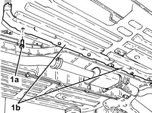
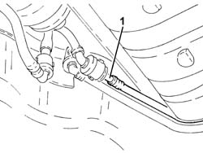
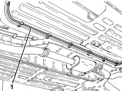
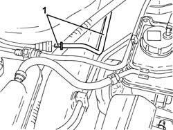

1080E60 pipe from fuel vapour separator to activated carbon filter - r r
- Path
- Procedures > 10 ENGINE > 1080 EXHAUST EMISSION CONTROL SYSTEM > 1080E evaporation control system > 1080E60 pipe from fuel vapour separator to activated carbon filter - r r
- Kind
- repair procedure (removal / refitting; the operation number is the code)
- Applies to
- engines: 2.0 JTS, 2.0 JTS; all production periods
- Interactive page
- https://sloeber94.github.io/elrnDB-a156/en/#/3237754
Applies to: engines: 2.0 JTS, 2.0 JTS; all production periods
 Removing
Removing
 Refitting
RefittingPosition the vehicle on the ramp.
1. Undo the bolts (1a) and remove the plastic protections (1b) of the fuel and fuel vapour pipes.

Applies to: engines: 2.0 JTS, 2.0 JTS; all production periods
1. Disconnect the rapid attachment for the pipe from the fuel vapour separator to the active charcoal filter, separator side.

Applies to: engines: 2.0 JTS, 2.0 JTS; all production periods
1. Release the pipe from the fuel vapour separator to the active charcoal filter from the underbody fastenings.

Applies to: engines: 2.0 JTS, 2.0 JTS; all production periods
Proceed with removal 1016A10 sound-proofing cover - r + r .
Proceed with removal 1008C10 power unit upper reaction link r r .
Proceed with removal 1008C16 body link bracket - r r .
Release rigid pipe section from the fuel vapour separator to the active charcoal filter from the attachments near the alternator.
1. Disconnect the rapid attachment for the pipe from the fuel vapour separator to the active charcoal filter, active charcoal filter side, and remove it.

Applies to: engines: 2.0 JTS, 2.0 JTS; all production periods
Refitting
RemovingRefit in its seating the pipe from the fuel vapour separator to the active charcoal filter and connect the rapid attachment on the active charcoal filter side.
Secure the rigid pipe section from fuel vapour separator to active charcoal filter from the attachments located near the alternator.
Proceed with refitting 1008C16 body link bracket - r r .
Proceed with refitting 1008C10 power unit upper reaction link r r .
Proceed with refitting 1016A10 sound-proofing cover - r + r .
Secure the pipe from the fuel vapour separator to the active charcoal filter to the fastenings under the body.
Connect the rapid attachment for the pipe from the fuel vapour separator to the active charcoal filter, separator side.
Refit in its seating the plastic protections of the fuel and fuel vapour pipes and secure them with their bolts.
Remove the car from the ramps.